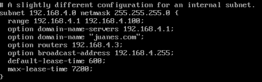
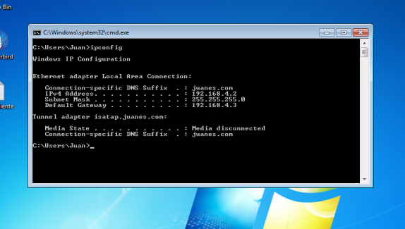

Tutorial de instalacion servidor DHCP
Abril 4, 2023 posted por Juan E. Castro
Es un protocolo de red que utiliza una arquitectura cliente-servidor. Por tanto, tendremos uno o varios servidores DHCP y también uno o varios clientes, que se deberán comunicar entre ellos correctamente para que el servidor DHCP brinde información a los diferentes clientes conectados. Este protocolo se encarga de asignar de manera dinámica y automática una dirección IP, ya sea una dirección IP privada desde el router hacia los equipos de la red local, o también una IP pública por parte de un operador que utilice este tipo de protocolo para el establecimiento de la conexión. A continuacion se relizara un tutorial de como se realiza la intalacion de un servidor de DNS en Centos 7.
Requisitos:
- Direccion Ip estatica
- Servidor DNS
- Maquina virtual Centos 7
- Maquina virtual con Window XP, 7, 8, 8.1
Paso 1: Intalacion del servidor DHCP.
Se realiza la instalacion del servicio de DHCP para Linux con el siguiente comando.
Paso 2: Configuracion del servidor DHCP.
Se realiza la configuracion del servidor de DHCP en el documento ubicado el la direccion /etc/dhcp. Alli encontraremos el archivo dhcp.conf el cual lo abriremos con un editor de texto y realizaremos la siguiente configuracion. Si hay alguna linea que este comentada se debera descomentar.
Pruebas de funcionamiento del servidor DHCP.
Para realizar la prueba de que el servidor esta bien configurado, vamos a nuestra maquina virtual configurada como cliente. Con el comando ipconfig en la consola del sistema (cmd) podemos observar que nuestro servicio DHCP esta funcionando correctamente.
